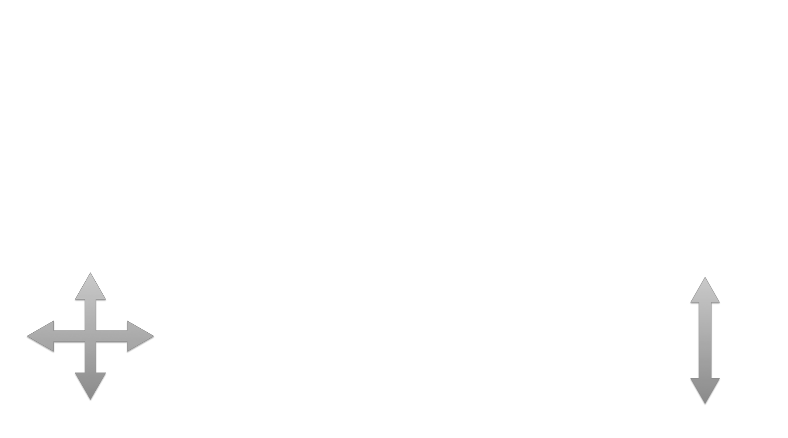

Left Channel Select
Right Channel Select
Frequency
Frequency
Vergence Offset
Navigate by touching and dragging the left side of the screen. Zoom by touching and dragging the right side of the screen. Use the sliders on either side of the goggles to change the wavelength of the image sent to each eye.
